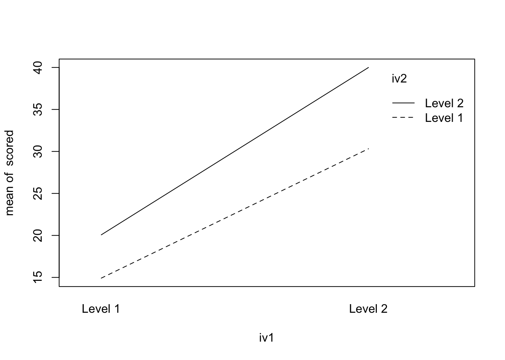

Two Factor Between Subject ANOVA
Recall the way that the ANOVA is formatted:
groups = rep(c("Control","Treatment 1", "Treatment 2"), each = 20)
score =c(rnorm(20,10),rnorm(20,15),rnorm(20,22))
onefact <- data.frame(groups,score)We have three independent variables, or conditions, control, treatment 1 and treatment 2. We have one dependent variable, some idea of “score”.
The ANOVA is analyzed through the use of the aov function. Remember to save the analysis as a model so you can use it later if you need to do any post-hoc tests/unplanned comparisons.
Df Sum Sq Mean Sq F value Pr(>F)
groups 2 1475.2 737.6 713.7 <2e-16 ***
Residuals 57 58.9 1.0
---
Signif. codes: 0 '***' 0.001 '**' 0.01 '*' 0.05 '.' 0.1 ' ' 1| Df | Sum Sq | Mean Sq | F value | Pr(>F) | |
|---|---|---|---|---|---|
| groups | 2 | 1475.15453 | 737.577264 | 713.7353 | 0 |
| Residuals | 57 | 58.90406 | 1.033405 | NA | NA |
This produces a sum of squares and mean squares for the between subjects factor, groups. It also produces a sum of squares and mean squares for the within subjects factor, also called the residuals, or the error.
From this we get one F-value.
The current design will not help us too much so we need to move on to another design, the two factor between subjects ANOVA.
The set-up is mostly the same:
Gender = c(rep("Male", 30), rep("Female",30))
Diet = c(rep(c("Diet 1", "Diet 2"), 30))
Count = c(rnorm(30,28,2),rnorm(30,35,2))
twofact.df <- data.frame(Gender,Diet,Count)
twofact.df Gender Diet Count
1 Male Diet 1 22.67655
2 Male Diet 2 29.35854
3 Male Diet 1 31.93067
4 Male Diet 2 27.75096
5 Male Diet 1 30.02002
6 Male Diet 2 23.93551
7 Male Diet 1 29.20136
8 Male Diet 2 29.17159
9 Male Diet 1 27.23686
10 Male Diet 2 31.21502
11 Male Diet 1 29.39725
12 Male Diet 2 25.24220
13 Male Diet 1 32.63705
14 Male Diet 2 27.85621
15 Male Diet 1 30.49511
16 Male Diet 2 29.77837
17 Male Diet 1 28.15581
18 Male Diet 2 24.59904
19 Male Diet 1 26.72456
20 Male Diet 2 29.14359
21 Male Diet 1 26.36284
22 Male Diet 2 24.53734
23 Male Diet 1 31.46813
24 Male Diet 2 27.96462
25 Male Diet 1 27.40348
26 Male Diet 2 26.90934
27 Male Diet 1 27.29749
28 Male Diet 2 28.30183
29 Male Diet 1 30.50816
30 Male Diet 2 27.64922
31 Female Diet 1 32.84199
32 Female Diet 2 33.18926
33 Female Diet 1 32.46185
34 Female Diet 2 38.19903
35 Female Diet 1 36.53001
36 Female Diet 2 35.11607
37 Female Diet 1 38.13782
38 Female Diet 2 34.93763
39 Female Diet 1 35.97011
40 Female Diet 2 34.40235
41 Female Diet 1 35.99387
42 Female Diet 2 36.73728
43 Female Diet 1 33.81399
44 Female Diet 2 31.17713
45 Female Diet 1 37.01405
46 Female Diet 2 33.98869
47 Female Diet 1 34.14987
48 Female Diet 2 34.62933
49 Female Diet 1 34.12689
50 Female Diet 2 33.84156
51 Female Diet 1 36.84563
52 Female Diet 2 36.51812
53 Female Diet 1 33.94685
54 Female Diet 2 36.44349
55 Female Diet 1 34.00480
56 Female Diet 2 39.66163
57 Female Diet 1 35.04273
58 Female Diet 2 34.96337
59 Female Diet 1 36.80252
60 Female Diet 2 37.75104We can see that there are two levels of the independent variable (gender) and two levels of the independent variable (Diet) and one dependent variable, count.
From this we will generate four sums of squares and four mean squares. - Sum of Squares for Factor A - Sum of Squares for Factor B - Sum of Squares for the interaction between A and B - Sum of Squares within, or Error, or residual.
Analyizing the data just uses one more term:
twofact.mod<-aov(Count~Gender*Diet,data = twofact.df)
summary(twofact.mod) Df Sum Sq Mean Sq F value Pr(>F)
Gender 1 765.5 765.5 162.484 <2e-16 ***
Diet 1 3.4 3.4 0.716 0.401
Gender:Diet 1 8.0 8.0 1.708 0.197
Residuals 56 263.8 4.7
---
Signif. codes: 0 '***' 0.001 '**' 0.01 '*' 0.05 '.' 0.1 ' ' 1kable(xtable(summary(twofact.mod)))| Df | Sum Sq | Mean Sq | F value | Pr(>F) | |
|---|---|---|---|---|---|
| Gender | 1 | 765.481583 | 765.481583 | 162.4842678 | 0.0000000 |
| Diet | 1 | 3.374393 | 3.374393 | 0.7162625 | 0.4009747 |
| Gender:Diet | 1 | 8.048339 | 8.048339 | 1.7083736 | 0.1965383 |
| Residuals | 56 | 263.822272 | 4.711112 | NA | NA |
Okay, so we have the anova table, but what do these results look like?
In order to plot these relationships we use interaction.plot.
interaction.plot(twofact.df$Gender,twofact.df$Diet, twofact.df$Count)
scored=rnorm(80,c(15,20,30,40))
iv1 = rep(c("Level 1","Level 2"),each=2,20)
iv2 = rep(c("Level 1","Level 2"),each=1,40)
df <- data.frame(iv1,iv2,scored)
length(iv1)[1] 80length(iv2)[1] 80length(scored)[1] 80summary(aov(scored~iv1*iv2,data = df)) Df Sum Sq Mean Sq F value Pr(>F)
iv1 1 6120 6120 5447.6 <2e-16 ***
iv2 1 1115 1115 992.6 <2e-16 ***
iv1:iv2 1 153 153 135.8 <2e-16 ***
Residuals 76 85 1
---
Signif. codes: 0 '***' 0.001 '**' 0.01 '*' 0.05 '.' 0.1 ' ' 1interaction.plot(iv1,iv2,scored)